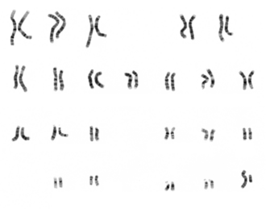

AP & IB Biology — Interpreting Genetic Inheritance Patterns
What Is a Pedigree?
A pedigree is a diagram that shows the occurrence of a phenotype (observable trait) across multiple generations of a family. Geneticists, doctors, and genetic counselors use pedigrees to track how traits—especially inherited disorders—are passed from parents to offspring.
Why do pedigrees matter?
Pedigrees allow us to determine whether a trait is dominant or recessive, whether it is autosomal or sex-linked, and to predict the probability that future offspring will inherit a particular condition.
Key Vocabulary
Pedigree A chart showing the inheritance of a trait over several generations.
Phenotype The observable expression of a trait (e.g., black coat, dimples, disease symptoms).
Genotype The genetic makeup of an individual (e.g., Bb, bb).
Carrier An individual who is heterozygous for a recessive trait—they carry the allele but do not show the phenotype.
Autosomal A trait located on one of the 22 pairs of non-sex chromosomes (autosomes 1–22). Humans have 44 autosomes + 2 sex chromosomes = 46 total.
Sex-linked A trait located on a sex chromosome (usually the X chromosome).
Dominant A trait expressed when at least one dominant allele is present (only one copy needed).
Recessive A trait expressed only when two copies of the recessive allele are present (homozygous recessive).
Pedigree Symbols at a Glance
Pedigrees use a standardized set of symbols so that any scientist can read them:
Unaffected Male
Unaffected Female
Affected Male
Affected Female
Mating Pair
Offspring (siblings)
Tip: Individuals in the same horizontal row of a pedigree belong to the same generation. Vertical lines connect parents to their children.
How to Read & Build a Pedigree
Step-by-Step: Constructing a Pedigree
Identify the trait being studied. Determine which phenotype you are tracking (e.g., a genetic disorder, a physical trait like coat color).
Gather family information. Collect data on which individuals are affected and unaffected across at least two–three generations.
Draw standardized symbols. Use squares for males, circles for females. Shade affected individuals; leave unaffected ones open.
Connect mating pairs. A horizontal line between a male and female represents a mating. A vertical “T” shape drops down to offspring.
Arrange by generation. Place each generation on its own horizontal row. The oldest generation goes at the top.
Use a “comb” for siblings. A horizontal line across the top of several offspring lines shows they share the same biological parents.
Add names or numbers. Label individuals so you can refer to them when analyzing the pedigree.
Determining Inheritance Patterns
Once a pedigree is drawn, you can analyze it to determine how the trait is inherited. There are four major patterns to consider:
Autosomal Dominant
Affected individuals appear in every generation (no skipping).
An affected child must have at least one affected parent.
Trait affects males and females equally.
Unaffected parents do not produce affected children.
Autosomal Recessive
Trait can skip generations.
Affected children can come from two unaffected (carrier) parents.
Trait affects males and females equally.
If both parents are carriers: expect roughly 1/4 affected offspring.
X-linked Recessive
More males affected than females.
Affected males receive the allele from their carrier mother.
An affected father passes the allele to all daughters (carriers) but no sons.
Trait often skips generations through carrier females.
X-linked Dominant
Affected fathers pass the trait to all daughters and no sons.
Affected mothers can pass the trait to sons and daughters.
More females tend to be affected (they have two X chromosomes).
Does not skip generations.
Quick-Check Rules
Is it Dominant or Recessive?
Ask: “Can two unaffected parents have an affected child?”
• Yes → The trait is likely recessive (both parents are carriers).
• No → The trait is likely dominant.
Is it Autosomal or X-linked?
Ask: “Are males affected much more often than females?”
• Yes → Consider X-linked inheritance.
• No (roughly equal) → Likely autosomal.
The Human Karyotype: Seeing Chromosomes
A karyotype is a photograph of all the chromosomes in a cell, arranged by size and numbered. The image below shows a human male karyotype:

Human male karyotype — 22 pairs of autosomes + 1 pair of sex chromosomes (XY) = 46 chromosomes total
Humans have 46 chromosomes arranged in 23 pairs: 22 pairs of autosomes (numbered 1–22) plus 1 pair of sex chromosomes. Females have two X chromosomes (XX); males have one X and one Y (XY).
Why Males Are More Vulnerable to X-Linked Traits
Look at the sex chromosomes in the karyotype above. The X chromosome is much larger than the Y chromosome—they are not homologous. The Y chromosome carries very few genes compared to the X.
This means males have only one copy of most X-linked genes. If a male inherits a single recessive allele on his X chromosome, there is no second X to provide a dominant “backup” allele. He will express the recessive trait. Females, with two X chromosomes, would need two copies of the recessive allele to be affected—one from each parent. This is why X-linked recessive disorders affect males far more often than females.
Interactive Check: Identify the Symbol
Lesson Check 1
What does a shaded circle represent in a pedigree?
Correct! A circle represents a female, and shading means the individual is affected—they express the trait being studied.
Not quite. Remember: circles = female, squares = male. Shading means the individual is affected. A shaded circle = an affected female.
Lesson Check 2
Two unaffected parents have an affected child. What does this tell you about the inheritance pattern?
Correct! When two unaffected parents produce an affected child, the trait must be recessive. Both parents are heterozygous carriers (e.g., Aa × Aa), and the affected child is homozygous recessive (aa).
Not quite. If the trait were dominant, at least one parent would need to be affected to pass it on. Since both parents are unaffected, they must each carry one hidden recessive allele—the trait is recessive. Both parents are carriers (Aa).
Lesson Check 3
A genetic condition appears almost exclusively in males and is passed from carrier mothers to sons. What inheritance pattern does this suggest?
Correct! X-linked recessive traits predominantly affect males because they only have one X chromosome. If their single X carries the recessive allele, they express the trait. Females would need two copies to be affected, so they are usually just carriers.
Think again. When a trait overwhelmingly affects males and is transmitted through carrier mothers, it is on the X chromosome. Males (XY) only need one copy of the recessive allele on their X to be affected, making this X-linked recessive.
Practice Problems
Use the pedigrees below to answer each question. After you submit your answer, read the explanation carefully—it will walk you through the reasoning.
Pedigree 1 — Ruben & Sydney’s Family
This pedigree tracks an inherited medical condition through four generations. Study which individuals are affected (shaded) and which are unaffected (open).
Practice Question 1
Looking at Pedigree 1, is the trait (condition) most likely dominant or recessive? Explain your reasoning.
Answer: The trait is autosomal recessive.
Key evidence: Ruben and Sydney are both unaffected, yet they have affected offspring (Janet, Max). When two unaffected parents produce affected children, the trait must be recessive—both parents are carriers (heterozygous). If the trait were dominant, at least one parent would need to show the phenotype to pass it on.
Genotypes: Ruben = Aa, Sydney = Aa, Janet = aa, Max = aa.
Practice Question 2
What are the possible genotypes of Sam? (Sam is married into the family and mated with Janet.)
Correct! Sam is unaffected, so at first glance he could be either AA or Aa. However, we can use the pedigree to narrow it down. Janet is affected (aa), and their son Ethan is also affected (aa). For Ethan to be aa, he must have received a recessive allele from each parent. Janet contributes one a, and Sam must also contribute an a. Therefore Sam must be Aa (a carrier)—he cannot be AA.
Think carefully: Sam is unaffected, which means he carries at least one dominant allele. That rules out aa. But could he be AA or Aa? Look at his children with Janet (aa)—Ethan is affected (aa). For Ethan to be aa, he must have received a recessive allele from each parent. Janet contributes one a, and Sam must also contribute an a. Therefore Sam is Aa only—the pedigree data rules out AA.
Practice Question 3
Carlos and Juliet are both unaffected. Their daughter Sarah is affected. What must be true about Carlos and Juliet’s genotypes?
Answer: Both Carlos and Juliet must be carriers (Aa).
Since the trait is autosomal recessive, an affected individual (Sarah = aa) must receive one recessive allele from each parent. Both Carlos and Juliet are unaffected but must each carry one recessive allele. Therefore:
• Carlos = Aa
• Juliet = Aa
• Sarah = aa (affected)
Practice Question 4
Sarah (affected) and Luke (unaffected) have three children: Cindy (affected), Nicole (unaffected), and James (unaffected). What is Luke’s genotype? What are the possible genotypes of Nicole and James?
Answer:
• Luke must be Aa (a carrier). Sarah is aa, and their daughter Cindy is also affected (aa). For Cindy to be aa, she needs a recessive allele from each parent. Sarah provides one a; Luke must provide the other. So Luke = Aa.
• Nicole and James are unaffected. Since the cross is Aa × aa, unaffected offspring are Aa (carriers). Therefore Nicole = Aa and James = Aa.
Practice Question 5
Does this pedigree support autosomal or sex-linked inheritance? Explain your reasoning.
Answer: Autosomal inheritance.
The trait affects both males and females (Janet, Max, Sarah, Ethan, Cindy). In X-linked recessive inheritance, we would expect mostly males to be affected. Here, females are affected just as often as males, strongly supporting autosomal recessive inheritance.
Challenge Problems
These problems require deeper analysis. Use the second pedigree (Tyson & Emilia’s family) and additional scenarios. After answering, read each explanation to solidify your understanding.
Pedigree 2 — Tyson & Emilia’s Family
This pedigree tracks a different inherited condition. Carefully examine which individuals are affected.
Challenge Question 1
Analyze Pedigree 2. Is this trait dominant or recessive? Is it autosomal or sex-linked? Provide evidence from the pedigree to support both conclusions.
Answer: The trait is autosomal recessive.
Evidence it is recessive: Tyson and Emilia are both unaffected, yet they produced affected offspring (Tanya, Jacob). Two unaffected parents producing affected children is the hallmark of recessive inheritance. Both parents must be carriers (Aa).
Evidence it is autosomal (not sex-linked): Both males and females are affected (Tanya = female, Jacob = male, Dylan = male, Angelina = female, Diana = female). The trait does not preferentially affect one sex, which rules out X-linked patterns. If it were X-linked recessive, we would expect predominantly males to be affected, and an affected female (like Tanya) would need an affected father—but Tyson is unaffected.
Challenge Question 2
Determine the genotypes of Derrick and Tanya. Then determine the probability that their child Ava is a carrier of the trait.
Answer:
• Tanya = aa (she is affected).
• Derrick = Aa (he is unaffected but has an affected son, Dylan). Since Dylan is aa, he received one a from Tanya and one a from Derrick.
Cross: Aa × aa
Offspring possibilities: 1/2 Aa (carrier) : 1/2 aa (affected)
Ava is unaffected, so she is NOT aa. Among the unaffected offspring of this cross, all are Aa (carriers). Therefore the probability that Ava is a carrier is 100% (or we can say: given that she is unaffected, she must be Aa).
Challenge Question 3
Ryan and Olivia are both unaffected, but their daughter Angelina is affected. If Ryan and Olivia were to have another child, what is the probability that the child would be affected? What is the probability the child would be a carrier?
Answer:
Since Angelina is affected (aa), both Ryan and Olivia must be carriers: Ryan = Aa, Olivia = Aa.
Cross: Aa × Aa
• 1/4 AA (homozygous dominant, unaffected, not a carrier)
• 2/4 Aa (heterozygous, unaffected carrier)
• 1/4 aa (homozygous recessive, affected)
Probability of being affected = 1/4 (25%).
Probability of being a carrier = 2/4 (50%).
Challenge Question 4
Chloe (unaffected) and Benjamin (unaffected) have three daughters: Leah, Jackie, and Diana. Diana is affected. What are Chloe’s and Benjamin’s genotypes? What is the probability that Leah is a carrier?
Answer:
Diana is affected (aa), so both parents must carry at least one recessive allele:
• Chloe = Aa
• Benjamin = Aa
Cross: Aa × Aa → 1/4 AA, 2/4 Aa, 1/4 aa
Leah is unaffected (so she is either AA or Aa). Among unaffected offspring of two carriers:
• AA : Aa = 1 : 2
• Probability Leah is a carrier (Aa) = 2/3 (approximately 67%).
Challenge Question 5
A different family has the following pedigree pattern: An affected father and an unaffected mother have all affected daughters and all unaffected sons. What inheritance pattern does this suggest? Explain why.
Answer: X-linked dominant inheritance.
Reasoning: The affected father (XAY) passes his X chromosome to all daughters and his Y to all sons. If the trait is X-linked dominant:
• All daughters receive the father’s affected XA, making them affected (XAXa).
• All sons receive the father’s Y (not his X), so they are unaffected (XaY) if the mother is homozygous normal.
This pattern—all daughters affected, no sons affected—is the classic signature of X-linked dominant inheritance from an affected father.
Challenge Question 6
Polydactyly (extra fingers or toes) is an autosomal dominant trait. If one parent is heterozygous for polydactyly (Pp) and the other parent is homozygous normal (pp), draw a Punnett square and determine: (a) What percentage of offspring will have polydactyly? (b) Could two parents with polydactyly have a child with the normal number of digits?
Answer:
Punnett Square (Pp × pp):
| p | p
P | Pp | Pp
p | pp | pp
(a) 2/4 offspring are Pp (polydactyly) and 2/4 are pp (normal). So 50% of offspring will have polydactyly.
(b) Yes! If both parents are heterozygous (Pp × Pp):
| P | p
P | PP | Pp
p | Pp | pp
There is a 1/4 (25%) chance of a homozygous normal (pp) child. So yes, two parents with polydactyly can have a child with the normal number of digits.
Sex-Linked Inheritance
So far, the pedigrees you have analyzed tracked autosomal traits—genes on chromosomes 1–22 that affect males and females equally. Now we turn to traits carried on the sex chromosomes, especially the X chromosome. These follow different rules.
Review: Sex Chromosomes Are Not Equal
The X chromosome is much larger than the Y chromosome — they are not homologous
Recall: the X chromosome carries roughly 800–900 genes, while the Y chromosome carries only about 50–60 genes. Most X-linked genes have no corresponding copy on the Y. A male who inherits a recessive allele on his single X has no second allele to mask it—he is said to be hemizygous for that gene.
Key Concept: Hemizygous Males
• Females (XX): Have two copies of every X-linked gene. A recessive allele can be masked by a dominant allele on the other X. Females can be carriers—they carry one copy of a recessive allele without showing the trait.
• Males (XY): Have only one copy of each X-linked gene. If that single copy is recessive, the male will express the trait. Males cannot be carriers of X-linked recessive traits—they are either affected or unaffected.
Hemophilia: A Classic X-Linked Recessive Disorder
What is hemophilia?
Hemophilia is a bleeding disorder in which the blood does not clot properly. People with hemophilia can bleed for much longer than normal after an injury, and they are at risk for internal bleeding. The gene for one of the key clotting factors is located on the X chromosome.
Historical connection: Queen Victoria of England (1819–1901) was a carrier of hemophilia. She passed the allele to several of her children, who married into royal families across Europe, spreading hemophilia through the royal houses of Spain, Germany, and Russia. It became known as “the royal disease.”
Genotype Notation for X-Linked Traits
For X-linked traits, we write the alleles as superscripts on the X chromosome. For hemophilia, let H = normal clotting (dominant) and h = hemophilia (recessive):
XHXH Female — Unaffected (homozygous dominant)
XHXh Female — Carrier (unaffected) (heterozygous)
XhXh Female — Affected (homozygous recessive; very rare)
XHY Male — Unaffected
XhY Male — Affected (hemizygous recessive)
Carrier Females in Pedigrees
In sex-linked pedigrees, carrier females are shown with a half-shaded symbol. The left half is filled to indicate they carry one copy of the recessive allele, even though they do not show the trait:
Unaffected Female (XHXH)
Carrier Female (XHXh)
Affected Female (XhXh)
Unaffected Male (XHY)
Affected Male (XhY)
How X-Linked Traits Are Passed
Key Inheritance Rules:
• Fathers pass their X to all daughters and their Y to all sons. An affected father (XhY) will make all daughters carriers but will not pass the allele to any sons.
• Carrier mothers (XHXh) have a 50% chance of passing Xh to each child. Sons who receive Xh will be affected; daughters who receive Xh will be carriers.
• For a female to be affected, she must inherit Xh from both parents—meaning her father must be affected and her mother must be at least a carrier. This is why affected females are very rare.
Check Your Understanding
Lesson Check 4
A mother is a carrier for hemophilia (XHXh) and the father is unaffected (XHY). What percentage of their sons would be expected to have hemophilia?
Correct! The carrier mother passes either XH or Xh to each son with equal probability. Sons get their Y from the father, so: 50% of sons = XHY (unaffected) and 50% = XhY (affected).
Not quite. The carrier mother (XHXh) has a 50/50 chance of passing either her normal XH or her recessive Xh to each child. Sons always get Y from the father. So 50% of sons will receive Xh and be affected.
Lesson Check 5
Why are males more frequently affected by X-linked recessive disorders than females?
Correct! Males are hemizygous—they have only one X chromosome. With no second X to carry a dominant allele, a single recessive allele on the X is automatically expressed. Females need two recessive copies (one from each parent) to be affected, which is much less likely.
Think about the chromosomes. Males have only one X chromosome (and one Y). The Y does not carry copies of most X-linked genes. So if a male’s single X has a recessive allele, there is no backup dominant allele to mask it—he will express the trait. This makes males hemizygous for X-linked genes.
Lesson Check 6
A father has hemophilia (XhY). Can he pass hemophilia directly to his sons?
Correct! A father gives his Y chromosome to every son and his X chromosome to every daughter. Since the hemophilia allele is on his X, he passes it to daughters only (making them carriers at minimum). His sons receive his Y, which does not carry the hemophilia gene. Whether sons are affected depends entirely on what the mother passes.
Remember how sex chromosomes are inherited: fathers always pass their Y to sons and their X to daughters. An affected father (XhY) gives his Xh to every daughter (making them at least carriers), but his sons get his Y—not his X. The father cannot directly pass an X-linked allele to his sons.
Sex-Linked Pedigree: Hemophilia
Use the pedigree below to answer each question. This family is tracking hemophilia, an X-linked recessive disorder. Carrier females are shown with half-shaded circles.
Pedigree 3 — Robert & Catherine’s Family (Hemophilia)
Robert is unaffected. Catherine is known to be a carrier of hemophilia (XHXh). Study how the hemophilia allele passes through their family across three generations.
Sex-Linked Question 1
What are the genotypes of Robert and Catherine?
Correct! Robert is an unaffected male, so his genotype is XHY. Catherine is identified as a carrier, meaning she has one normal and one recessive allele: XHXh. Remember, males have XY (not XX), so Robert cannot be XHXH.
Remember: males are XY (not XX), so Robert’s genotype must include a Y. He is unaffected, so he is XHY. Catherine is a carrier (unaffected but heterozygous), so she is XHXh.
Sex-Linked Question 2
Michael has hemophilia but his brother Thomas does not, even though they have the same parents. Explain how this is possible using their genotypes.
Answer:
Catherine (XHXh) has a 50% chance of passing XH and a 50% chance of passing Xh to each son. Both sons get their Y from Robert.
• Michael received Xh from Catherine → genotype XhY → affected.
• Thomas received XH from Catherine → genotype XHY → unaffected.
This is simply the luck of which X chromosome each son inherited. Each son had a 50/50 chance.
Sex-Linked Question 3
Elena is a carrier (XHXh) and James is unaffected (XHY). What is the probability that any individual son of theirs will have hemophilia?
Correct! Elena (XHXh) passes either XH or Xh with equal probability. Sons receive Y from James. So each son has a 50% chance of being XhY (affected) and a 50% chance of being XHY (unaffected). Daniel is one of the sons who received Xh.
Think about what the carrier mother (XHXh) can pass. She has two X chromosomes—one with the normal allele and one with the hemophilia allele. Each son gets one of these at random (plus Y from the father). That means each son has a 50% chance of receiving Xh and being affected.
Sex-Linked Question 4
What are the possible genotypes of Sophie (Elena and James’s unaffected daughter)? Could she be a carrier? Explain your reasoning.
Answer:
Elena (XHXh) × James (XHY):
Possible daughters:
• XHXH (unaffected, not a carrier) — 50% chance
• XHXh (unaffected, carrier) — 50% chance
Sophie is unaffected, so she is either XHXH or XHXh. Yes, she could be a carrier—there is a 50% probability she inherited the Xh allele from her mother. Without genetic testing, we cannot tell from the pedigree alone whether Sophie is a carrier.
Sex-Linked Question 5
Imagine Nathan (unaffected, XHY) marries a woman who is a carrier for hemophilia (XHXh). What is the probability that their first son will have hemophilia? What about their first daughter—could she be affected?
Answer:
Cross: Nathan (XHY) × Carrier woman (XHXh)
Sons: Each son gets Y from Nathan and either XH or Xh from the mother. So:
• 50% XHY (unaffected)
• 50% XhY (affected)
Probability their first son has hemophilia = 50%.
Daughters: Each daughter gets XH from Nathan and either XH or Xh from the mother. So:
• 50% XHXH (unaffected, not a carrier)
• 50% XHXh (unaffected, carrier) No daughter can be affected because Nathan always contributes XH. Every daughter gets at least one dominant allele.
Copy Your Answers for Google Classroom
Click the button below to compile all of your answers from every section into a format you can paste into a Google Doc or Word document for submission.